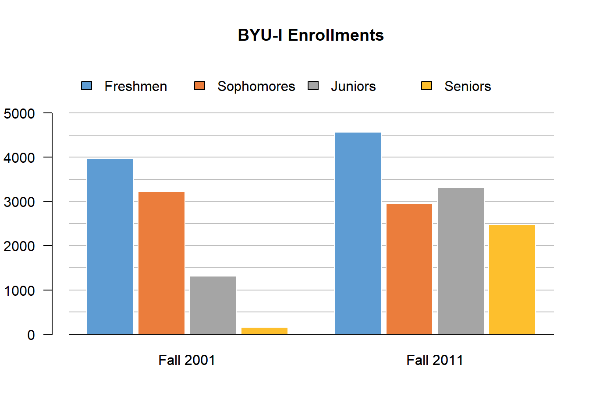

Lesson 6: Visualizing Data
Opening Story
Lesson 6 - Opening story
(2:12 mins, L6 Opening Story Transcript)
Identifying Patterns
As we saw in the opening video, Craig’s boss wanted him to create charts and graphs in order to help the team better understand their data. It can be hard to really understand what is going on by just looking at a list of numbers. Creating graphics such as charts and graphs to represent a set of data can make it much easier to understand. This is true because humans have an amazing ability to identify patterns in images. The following image is a great example. The tigers in the picture are hidden by the grass and the camouflaging stripes of the tigers. In spite of this, the human eye quickly locates the two tigers crouching in the grass.
Data visualization is the science of communicating important patterns from data through the use of graphics.
Figuratively speaking, the goal of a graphic is to help people quickly identify the “tiger in the grass.” In other words, the goal of a good graphic is to reveal important patterns in data.
Graphics can be very helpful as part of the Quantitative Reasoning Process. They provide a tool for examining data that enables a more powerful decision on the part of the user. To do this, graphics must communicate the truth data has to offer on a situation of interest.
Example 1
In 1995 a team of American researchers began a study on Alzheimer’s disease1. Alzheimer’s is a serious disease resulting in memory loss that most typically occurs in adults aged 65 and older. Individuals affected with the disease progressively lose the ability to function with normal daily tasks until they eventually die from the disease.
Before beginning their study, the researchers needed to find a geographic location where they could find enough elderly participants to carry out the study. Use the following graphic to find a location where the study could be carried out.
 ](data from healthdata.org)
](data from healthdata.org)
Solution
The researchers need a population that is old enough and healthy enough to observe possible factors that contribute to the development of Alzheimer’s disease. We notice the above graphic readily communicates which counties have the longest life expectancy by showing them in dark blue.
The graphic shows several counties showing dark blue. A detailed examination of each of the counties shows Cache County, Utah as having one of the longest life expediencies in the USA at 77.5 years (for males).
The researchers eventually selected Cache County Utah because, as they stated, “The elderly of Cache County have a longer life expectancy, higher educational attainment, and lower incidence of chronic disease (which can complicate the diagnosis of dementia) than other similar populations.”2
Example 1 is a good illustration of how graphics can improve our ability to understand data. Looking at the graphic helps us get an overall impression of life expectancy data throughout the United States. If we didn’t use a graphic, we would need to look at a list of life expectancies for each county in the United States. This would be a very long list of data and without using a graphic it would be much harder to get a good overall idea of what the data tells us.
Common Graphical Tools
While only the imagination limits what a good graphic can be, there are several types of graphics that are commonly used to communicate information. Learning how and when to use these common graphical tools will benefit you both as a student and as an employee.
Bar Charts
When data has several categories, the number of observations in each category can be visually summarized with a bar chart.
Example 2
Use a graphic to compare the number of Freshman, Sophomores, Junior, and Seniors at BYU-Idaho in 2001 and 2011. What information does the chart provide?
Solution
A bar chart is a good graphic to use for this data because the data has four categories: freshman, sophomore, junior, and senior.

The graphic shows that there were relatively few Juniors and almost no Seniors during the Fall 2001 semester. This makes sense when you note that in the Fall of 2001, the two-year junior college known as Ricks College officially transitioned to become the four-year university BYU-Idaho. This graphic demonstrates how the number of Juniors and Seniors increased to be similar to the number of Sophomores just ten years later. Interestingly, in the Fall of 2011 the number of incoming Freshman was still much greater than any of the Sophomore, Junior, or Senior classes. This shows how a good graphic will often lead to new questions. In this case, the new question deals with why there are so many Freshman not continuing into their sophomore year at BYU-Idaho.
Excel Instructions - Bar Charts
Click on each of the five steps below to learn how to make the BYU-Idaho Enrollments bar chart:
Step 1
Open a “New Workbook” in Excel.

Step 2
Enter the data as shown in the screenshot below.

Step 3
- [1] Highlight the data table you created.
- [2] Select the “Insert” tab in the top menu.
- [3] Select the “Barplot” icon.
- [4] Select the “Clustered Column” icon.

Step 4
Select the “Chart Design” tab in the top menu. - Select the “Switch Row/Column” icon.

Step 5
Give the chart a title.

Pie Charts
The pie chart is a sometimes useful alternative to the bar chart. Like the bar chart it is for displaying data that has several categories. Unlike the bar chart, the pie chart more readily displays the percentage of the whole “pie”, or data set, that belongs to each “slice”, or category, in the data.
Example 3
According to a 2016 official news release of The Church of Jesus Christ of Latter-day Saints, in the fall of 2016 there were 181 temples. The article states that there were “152 operating, 4 under renovation, 14 under construction, 11 announced.” Create a pie chart that depicts this information.
Solution
The following pie chart depicts this information and readily communicates that most temples are currently operating, but a very small percentage are under renovation.

Excel Instructions - Pie Charts
To make the above pie chart:
Step 1
Open a “New Workbook” in Excel.

Step 3
- [1] Highlight the data table you created.
- [2] Select the “Insert” tab in the top menu.
- [3] Select the “Piechart” icon.
- [4] Select the “Pie” icon.

Step4
Give the chart a title.

Time Series Plots
We are often interested in looking at patterns and trends in data over time. This is usually done with time series plots. These plots reveal important information about growth, decay, or repeating (cyclical) patterns.
Example 4
Create a graphic that shows the first 15 years of growth of the on-campus BYU-Idaho enrollments since BYU-Idaho officially began in the Fall semester of 2001.
Solution
A time series plot is perfect in this situation because we want to see how the number of on-campus students at BYU-Idaho has changed over time. We will use the total of part-time and full-time students that were living on campus during that semester. The data was taken from the BYU-Idaho Housing website, under the “Historical” link.

Notice in the graphic that the Spring semester is not officially part of the data until 2008. Also, note the cyclical pattern within each year that typically the Spring semester has the lowest enrollments of a given year. The overall growth of the university is also visible in the graph showing “a steady, upward course”3.
Excel Instructions - Time Series
To make the above time series plot:

Step 2
Highlight the Term and Enrollment columns of the data set. (Be sure to highlight all the way to the bottom of the data that goes to row 38.)

Step 3
Then,
- [1] Select the “Insert” tab in the top menu.
- [2] Select the “Line Chart” icon.
- [3] Select the “Line” icon.

Step 4
Edit the chart title and change the styling of the chart if you want.

Scatter Plots
The scatter plot is similar to a time series plot, but it does not require time to be part of the plot. It provides a visual understanding of how two different measurements are related.
Example 5
The US Department of Education has put together a useful resource called the College Scorecard for college bound students to make important decisions about where to attend college. An important consideration for college students is the amount of student loan debt they may take on during college. Use the information provided by the College Scorecard to determine whether students who attend bigger universities end up with more debt.
Solution
The scatter plot below represents the data from the College Scorecard website. Notice that the horizontal axis represents the median debt of student graduates. The vertical axis represents the number of undergraduates enrolled.

We want to use this graph to answer the question: Do students who attend bigger universities end up with more debt? If this were the case, we would expect to see the data points follow a linear pattern with large values on the horizontal axis corresponding to large values of the vertical axis. This is not the case. There really isn’t a pattern to the data.
Since there is not a pattern in the data, we know there is not any correlation between the size of the university and the median debt load of its graduates. It is interesting to note that all three Brigham Young University schools are on the lower end of the median student loan debt spectrum. However, BYU-Idaho, has the highest median student loan debt of the three while being in the middle for the number of undergraduates enrolled.
Clearly there are other factors that are not considered here that would provide better explanations of what brings on student debt.
Excel Instructions - Scatter Plots
To make the above scatter plot:

Step 2
Since there are 2,953 rows in this data set, highlighting the data is done as follows. - First, click on the B column label, which is above the Graduates' Median Debt entry. This will highlight the entire B column. - Second, hold down Shift and click on the C column label, which is above the Number of Undergraduates entry. This will expand the selection to include the C column.

Step 3
Once the data is selected [1], then
- [2] Select “Insert”.
- [3] Select the “Scatterplot” icon and the “Scatter” option.

Step 4
This is a scatter plot and it would be sufficient to stop here.

Step 5 [Bonus Step]
The following instructions teach how to label individual data points on the graph.
Step 5A
To add the BYU colleges to the plot, right click on the plot and choose “Select Data…” from the menu.

Step 5B
A new window will appear entitled “Select Data Source.”

Step 5C
Click the + sign and enter the following information exactly as shown.

Step 5D
Note that the information for Brigham Young University-Hawaii has appeared. Now, click the + sign again and enter the following information exactly as shown.

Step 5E
The information for Brigham Young University-Idaho has appeared. Again, click the + sign and enter the following information exactly as shown, then press OK.

Step 5F
Finally, select the “Quick Layout” tab in the top left menu and select the first option.

Step 5G
To complete the process use the “Quick Styles” menu to find a style you like, then double click on the different elements of the chart to complete the finishing touches.

Practice Reading Graphs
L06 - Interactive 1: Practice Reading Graphs
(L06-1 ADA Interactive Transcript)
Bicycle Safety Example
Graphics are a helpful tool that can be used in Step 3 of the Quantitative Reasoning Process. Consider the following example.
Understand the Problem
Anita has three teenage children that ride their bikes to school every day. They ride 1.3 miles down a road that has a bike lane, but no sidewalk. The city wants to add a turning lane to the middle of the road. To make the turning lane fit in the space they have, the city will need to narrow the bike lane. Anita is concerned for the safety of her children and wants to look at some research on how the width of the bike lane affects safety.
Identify Variables & Assumptions
After looking at some studies, Anita found a research study that gave some data using the following variables:
- The distance from the cyclist to the center line on the road.
- The distance from the cyclist to a passing car.
In order to apply the data she found to the situation in her neighborhood, Anita has to make some important assumptions.
- She will assume that the closer a cyclist is to a passing car the less safe it is for the cyclist.
- She will assume that the narrower the bike lane is, the narrower the road must be. This means the distance from the center line on the road to the cyclist will be smaller.
Apply Quantitative Tools
The following data is given in the research study Anita found: 4
| Distance from Cyclist to Center Line | Distance from Cyclist to Car |
|---|---|
| 12.8 | 5.5 |
| 12.9 | 6.2 |
| 12.9 | 6.3 |
| 13.6 | 7.0 |
| 14.5 | 7.8 |
| 14.6 | 8.3 |
| 15.1 | 7.1 |
| 17.5 | 10.0 |
| 19.5 | 10.8 |
| 20.8 | 11.0 |
Because this data relates two different variables, Anita decided to make a scatter plot of the data.

Because there is a pattern in this data, Anita was able to notice that when the distance from the cyclist to the center line is smaller, so is the distance from the cyclist to a passing car.
Make an Informed Decision
Anita was able to conclude that the scatter plot showed the road would be less safe if they narrowed the road to make room for the new sidewalk. This would have to decrease the distance form the cyclist to the center line and the graphs shows this means the distance between the cyclist and a passing car would then be smaller. Anita’s assumption is that this makes the road less safe for her children as they ride their bikes to school.
Based on the data, her graph, and her conclusion that the addition of a turning lane was going to make the road less safe, Anita decided to attend a city council meeting and express her concerns.
The city council listened respectfully to Anita’s concerns. Anita’s neighbors shared her concerns and also attended the meeting. As a result, the city decided to change their plans for making a narrow bicycle lane. This meant that they had to change their plans for the turning lane, but they were able to modify their plans in a way that still accommodated traffic.
Evaluate Your Reasoning
In this situation Anita decision led to her desired outcome. As she reflected on the progress she made, she realized that having data to back up her concerns was helpful when she presented to the city council.
Another Example
Although Anita’s story is fictional, similar situations are quite common in real-life. In December 2016, the city of Missoula, Montana considered reducing some two-lane streets to one lane with a bicycle lane 5. Some city residents were supportive of the change because it would improve safety for bicyclists and pedestrians, would slow traffic in a residential area, give more room for parking, and reduce crashes. The city has data on the amount of traffic on the street and found that a one-lane road could accommodate the current traffic without impacting vehicle flow.
Other city residents were opposed to the change, however. In particular, business owners were concerned about the impact reduced traffic might have on their businesses. Other opponents are concerned that the change is overly concerned about cyclists when cyclists are a very small portion of the traffic on the street.
The city council is taking comments from members of the community and concerned citizens could definitely use data and graphics, similar to the one used by Anita, to support their position.
Lesson Checklist
After completing this lesson you should be able to do the following:
- Create bar charts, pie charts, time series plots, and scatter plots of data in Excel.
- Interpret the information provided in bar charts, pie charts, time series plots, and scatter plots.
- Identify the type of chart (bar chart, pie chart, time series, scatter plot) that would be most appropriate for a given scenario.
- Make a contextual conclusion from a given chart (bar chart, pie chart, time series, scatter plot).
information from an article posted on www.usu.edu↩︎
information from an article posted on www.usu.edu↩︎
http://www2.byui.edu/Presentations/Transcripts/Devotionals/2001_09_18_Eyring.htm↩︎
http://www.missoulacurrent.com/government/2016/12/streets-single-lane/↩︎